दिशा बदलना
मोड़ लेने, पीछे हटने, लेन बदलने या यू-टर्न लेने से पहले, आपको अपने आगे और पीछे की स्थिति का पता होना चाहिए। हमेशा अपने मिरर और कंधे के ऊपर से देखते रहें ताकि यह सुनिश्चित हो सके कि रास्ता साफ है और आपके पास सुरक्षित रूप से आगे बढ़ने के लिए पर्याप्त जगह है।
मोड़ लेते हुए
मोड़ लेते समय, मोड़ से काफी पहले सिग्नल दें। जब रास्ता साफ हो, तो सही लेन में आ जाएं, दाएं मुड़ने के लिए सबसे दाहिनी लेन में या बाएं मुड़ने के लिए अपनी दिशा में सबसे बाईं लेन में। मुड़ने का सिग्नल दें और चारों ओर देखें और अपने ब्लाइंड स्पॉट की जांच करें ताकि यह सुनिश्चित हो सके कि रास्ता साफ है।
मोड़ में प्रवेश करने से पहले गति धीमी कर लें; मोड़ जितना तीखा होगा, गति उतनी ही धीमी होनी चाहिए। वाहन पर पूर्ण नियंत्रण बनाए रखने के लिए, स्टीयरिंग व्हील घुमाने से पहले ब्रेक पूरी तरह लगा लें।
तेज़ मोड़ लेने के लिए, एक हाथ से स्टीयरिंग व्हील को घुमाएँ और दूसरे हाथ को उसके ऊपर से ले जाएँ। स्टीयरिंग व्हील को दूसरी तरफ से पकड़ें और मोड़ना जारी रखें। इसे "हैंड ओवर हैंड स्टीयरिंग" कहते हैं। मोड़ पूरा होने पर, स्टीयरिंग व्हील पर अपनी पकड़ ढीली करें और उसे फिसलने दें या धीरे से अपने हाथों के बीच से निकालकर सीधी स्थिति में ले आएँ। स्टीयरिंग व्हील को एक उंगली या हथेली से न घुमाएँ। मोड़ पूरा करते समय धीरे-धीरे गति बढ़ाएँ।
ध्यान रखें, चालक अक्सर एक ही समय में एक से अधिक काम करने की कोशिश में वाहन पर से नियंत्रण खो देते हैं और वाहन फिसल जाता है। एक ही समय में ब्रेक लगाने और स्टीयरिंग घुमाने की कोशिश न करें।
दाएँ मुड़ें
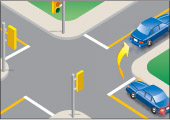
आरेख 2-30
जब तक कि संकेत या फुटपाथ पर बने निशान आपको ऐसा करने से मना न करें, तब तक हमेशा दाएं मुड़ने की शुरुआत और अंत सड़क के दाहिने किनारे के करीब से ही करें।
दाएँ मुड़ने के लिए, मुड़ने से काफी पहले सिग्नल दें और रास्ता साफ होने पर दाहिनी लेन में आ जाएँ। यदि दाहिनी लेन चिह्नित नहीं है, तो सड़क के जितना संभव हो सके दाहिनी ओर रहें। मुड़ने से पहले आगे, बाएँ, दाएँ और फिर से बाएँ देखें। यदि आपको कोई छोटा वाहन या पैदल यात्री दिखाई नहीं देता है, तो अपने दाहिने पीछे के ब्लाइंड स्पॉट की जाँच करें। साइकिल सवारों, सीमित गति वाली मोटरसाइकिलों या मोपेड सवारों को चौराहे से निकलने दें, उसके बाद ही मुड़ें। जब सुरक्षित हो, तो जिस सड़क पर आप प्रवेश कर रहे हैं, उसकी दाहिनी लेन में मुड़ जाएँ।
लाल बत्ती पर दाएँ मुड़ें
जब तक कोई संकेत मना न करे, आप लाल बत्ती होने पर भी दाएँ मुड़ सकते हैं, बशर्ते आप पहले पूरी तरह रुकें और रास्ता साफ़ होने तक प्रतीक्षा करें। मुड़ने का संकेत देना और पैदल यात्रियों और सड़क का उपयोग करने वाले अन्य लोगों को रास्ता देना न भूलें।
बाएँ मुड़ें
जब तक कि संकेत या फुटपाथ पर बने निशान आपको ऐसा करने से मना न करें, तब तक बाएं मुड़ने की शुरुआत और अंत हमेशा अपनी दिशा में सबसे बाईं लेन से ही करें।
बाएं मुड़ने के लिए, मुड़ने से काफी पहले सिग्नल दें और रास्ता साफ होने पर सबसे बाईं लेन में चले जाएं। आगे, पीछे, बाएं, दाएं और फिर से बाएं देखें और अपने ब्लाइंड स्पॉट की जांच करें। रास्ता साफ होने पर मुड़ें।
जब आप किसी चौराहे पर रुककर सामने से आ रहे वाहनों के हटने का इंतज़ार कर रहे हों, तो मोड़ पूरा होने तक स्टीयरिंग व्हील को बाईं ओर न घुमाएँ। स्टीयरिंग व्हील को बाईं ओर घुमाने से आपका वाहन सामने से आ रहे वाहनों के रास्ते में जा सकता है।
जब विपरीत दिशाओं से आ रहे दो वाहन किसी चौराहे पर बाएं मुड़ने के लिए मिलते हैं, तो प्रत्येक को पैदल यात्रियों और सामने से आ रहे वाहनों को रास्ता देने के बाद दूसरे के बाईं ओर मुड़ना चाहिए।
मोटरसाइकिल, साइकिल, सीमित गति वाली मोटरसाइकिल और मोपेड चौराहों पर बड़े वाहनों की तरह ही बाएं मुड़ती हैं। यदि आप इनमें से किसी वाहन के पीछे बाएं मुड़ रहे हैं, तो उसके बगल में आकर उसी समय मुड़ने की कोशिश न करें। पीछे रहें और रास्ता साफ होने पर मुड़ें। छोटे वाहन के दाएं मुड़ने का इंतजार करें, फिर उसे ओवरटेक करें।
नीचे दिए गए आरेख आपको विभिन्न प्रकार की सड़कों पर बाएं मुड़ने का सही तरीका दिखाते हैं:
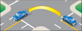
आरेख 2-31: दो-तरफ़ा सड़क से दो-तरफ़ा सड़क तक।
सेंटर लाइन के सबसे नज़दीक वाली लेन से सेंटर लाइन के दाईं ओर वाली लेन में एक सहज चाप बनाते हुए मुड़ें। फिर, जब संभव हो, तो दाईं ओर वाली लेन में चले जाएं।
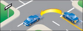
आरेख 2-32: दो-तरफ़ा सड़क से एक-तरफ़ा सड़क में परिवर्तन।
सेंटर लाइन के सबसे नजदीक वाली लेन से बाईं ओर की कर्ब लेन में मुड़ें।
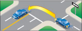
आरेख 2-33: एकतरफा सड़क से दोतरफा सड़क में परिवर्तन।
बाईं ओर की लेन से मुड़कर सेंटर लाइन के ठीक दाईं ओर वाली लेन में आ जाएं। फिर, जब संभव हो, तो दाईं ओर की लेन में चले जाएं।
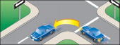
आरेख 2-34: एकतरफा सड़क से एकतरफा सड़क तक।
बाईं ओर की लेन से बाईं ओर की लेन में मुड़ें।
बाएँ मुड़ने वाली लेन
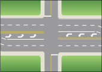
आरेख 2-35
कुछ सड़कों पर बाएं मुड़ने वाले वाहनों के लिए विशेष लेन बनी होती हैं (चित्र 2-35)। चौराहे पर जहां फुटपाथ पर बाएं मुड़ने वाली लेन चिह्नित हों, वहां चिह्नित लेन से मुड़ें। दूसरी सड़क पर मुड़ते समय इसी लेन में रहें।
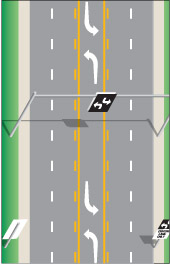
आरेख 2-36
कुछ सड़कों की मध्य लेन का उपयोग दो-तरफ़ा बाएँ मुड़ने वाली लेन के रूप में किया जाता है (आरेख 2-36)। इससे दोनों दिशाओं से बाएँ मुड़ने वाले वाहन यातायात को बाधित किए बिना मुड़ने के अवसर की प्रतीक्षा कर सकते हैं। दो-तरफ़ा बाएँ मुड़ने वाली लेन का उपयोग करने के लिए, इन चरणों का पालन करें:
- मोड़ लेने से ठीक पहले सिग्नल दें और बीच वाली लेन में आ जाएं। गति धीमी कर लें।
- सड़क या ड्राइववे के ठीक सामने उस जगह तक सावधानीपूर्वक आगे बढ़ें जहां आप मुड़ना चाहते हैं।
- रास्ता साफ होने पर ही मुड़ें।
ध्यान रखें कि विपरीत दिशा से आने वाले वाहन भी इसी लेन का उपयोग बाएं मुड़ने के लिए करते हैं। जब वे आपके सामने प्रतीक्षा कर रहे हों, तो आपके लिए सामने से आ रहे वाहनों को देखना मुश्किल हो सकता है। तभी आगे बढ़ें जब आपको पूरा यकीन हो कि रास्ता साफ है। इन बाएं मुड़ने वाली लेन का उपयोग ओवरटेकिंग के लिए नहीं किया जाना चाहिए।
लाल बत्ती पर बाएँ मुड़ें
आप किसी एकतरफा सड़क से दूसरी एकतरफा सड़क पर लाल बत्ती होने पर पूरी तरह रुकने और रास्ता साफ होने की पुष्टि करने के बाद ही बाएं मुड़ सकते हैं। पैदल यात्रियों और वाहनों को रास्ता दें।
गोल चक्करों से होकर गाड़ी चलाना
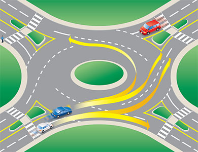
आरेख 2-37
निकट आ रहा है:
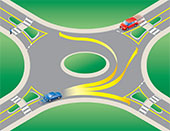
आरेख 2-38
- गोलचक्कर के पास पहुँचते ही, निकलने के लिए संकेत देखकर अपना रास्ता चुनें। किसी भी अन्य चौराहे की तरह ही लेन का चुनाव करें (चित्र 2-37 देखें)। बाएँ मुड़ने या सीधे जाने के लिए बाएँ लेन का उपयोग करें। दाएँ मुड़ने या सीधे जाने के लिए दाएँ लेन का उपयोग करें (चित्र 2-38 देखें)। यदि आप बाएँ मुड़ना चाहते हैं तो दाएँ लेन से गोलचक्कर में प्रवेश न करें। साइकिल चालक आमतौर पर उपयुक्त लेन के बीच में रहें, या साइकिल से उतरकर पैदल यात्री की तरह गोलचक्कर का उपयोग करें (चित्र 2-39 देखें)।
- गोलचक्कर के प्रवेश द्वार पर बनी 'यील्ड लाइन' की ओर बढ़ते समय गति धीमी रखें और पैदल यात्रियों का ध्यान रखें। अपनी लेन में ही रहें।
प्रवेश कर रहे हैं:
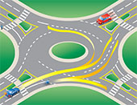
आरेख 2-39
- दृश्य जांच : गोलचक्कर में पहले से मौजूद सभी वाहनों और प्रवेश करने के लिए प्रतीक्षा कर रहे वाहनों (साइकिल चालकों सहित) की दृश्य जांच करें।
- बाईं ओर देखें : गोलचक्कर में वाहनों को प्राथमिकता दी जाती है। गोलचक्कर में प्रवेश करते समय, अपने बाईं ओर के वाहनों पर विशेष ध्यान दें। आवश्यकता पड़ने पर अपनी गति कम करें या रुकने के संकेत पर रुकें।
- पर्याप्त अंतराल : गोलचक्कर में प्रवेश करने के लिए सुरक्षित अवसर की प्रतीक्षा करें। जब यातायात प्रवाह में पर्याप्त अंतराल हो तभी प्रवेश करें। गोलचक्कर में पहले से मौजूद किसी अन्य वाहन के ठीक बगल में प्रवेश न करें, क्योंकि वह अगले निकास द्वार से बाहर निकल रहा हो सकता है।
- घड़ी की विपरीत दिशा में यात्रा करें : गोलचक्कर में प्रवेश करने के बाद, हमेशा केंद्रीय द्वीप के दाईं ओर रहें और घड़ी की विपरीत दिशा में यात्रा करें।
- चलते रहें : एक बार जब आप गोलचक्कर में प्रवेश कर लें, तो टक्कर से बचने के अलावा रुकें नहीं; प्रवेश करने वाले यातायात पर आपका अधिकार है। गोलचक्कर में लेन न बदलें। यदि आप भीतरी लेन में हैं और आपका निकास द्वार छूट गया है, तो आपको तब तक गोलचक्कर घुमाते रहना होगा जब तक कि आपको अपना निकास द्वार दोबारा न मिल जाए।
बाहर निकल रहा है:
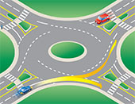
आरेख 2-40
- संकेत: निकलते समय संकेत देना सुनिश्चित करें और पैदल चलने वालों पर ध्यान दें।
- अपनी लेन में बने रहें: यदि आप बाईं लेन से आए हैं तो बाईं ओर रहें, या यदि आप दाईं लेन से आए हैं तो दाईं ओर रहें।
- अपनी स्थिति बनाए रखें: अन्य वाहनों के सापेक्ष अपनी स्थिति बनाए रखें।
- बाहर निकलने का संकेत दें: जब आप अपने इच्छित निकास से पहले वाले निकास को पार कर लें, तो अपने दाहिने मुड़ने का संकेत दें।
- बाएं लेन से बाहर निकलना: यदि आप बाएं लेन से बाहर निकल रहे हैं, तो दाईं ओर से आ रहे वाहनों से सावधान रहें जो गोलचक्कर के चारों ओर चक्कर लगाते रहते हैं।
गोलचक्कर पर विशिष्ट परिस्थितियों से निपटना
बड़े वाहनों पर विचार करें
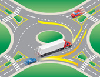
आरेख 2-41
बड़े वाहनों (ट्रकों और बसों) के बगल में अतिरिक्त जगह छोड़ें। बड़े वाहनों को गोलचक्कर के प्रवेश द्वार पर या उसके अंदर चौड़ा मोड़ लेना पड़ सकता है। उन्हें पर्याप्त जगह दें। (आरेख 2-41) देखें।
आपातकालीन वाहनों के लिए रास्ता दें
यदि आप किसी गोलचक्कर में हैं और कोई आपातकालीन वाहन आ रहा है, तो अपने निर्धारित निकास द्वार से बाहर निकलें और ट्रैफिक आइलैंड से आगे निकलकर गाड़ी रोकें। यदि आप अभी तक गोलचक्कर में प्रवेश नहीं कर पाए हैं, तो संभव हो तो दाईं ओर गाड़ी रोकें और आपातकालीन वाहन के गुजरने तक प्रतीक्षा करें।
गोलचक्कर में बड़ा वाहन चलाना
किसी बड़े वाहन (जैसे ट्रक या बस) को चलाते समय, ड्राइवर को सड़क की पूरी चौड़ाई का उपयोग करना पड़ सकता है, जिसमें सड़क के किनारे बने बीच के हिस्से (एप्रन) का उपयोग भी शामिल है, यदि वह उपलब्ध हो। राउंडअबाउट में प्रवेश करने से पहले, वाहन को दोनों लेन में चलना पड़ सकता है। बड़े वाहनों को चलने-फिरने के लिए पर्याप्त जगह दें।
ध्यान दें: ओंटारियो के कुछ क्षेत्रों में पुराने "ट्रैफिक सर्कल" मौजूद हैं। ये राउंडअबाउट से बड़े होते हैं, जिससे तेज़ गति संभव होती है और ट्रैफिक को आपस में मिलने और निकलने के लिए मजबूर होना पड़ता है। आधुनिक राउंडअबाउट का व्यास छोटा होता है और प्रवेश बिंदुओं पर ट्रैफिक की गति को कम करने या पैदल यात्रियों को सुरक्षित स्थान प्रदान करने के लिए स्प्लिटर आइलैंड (ट्रैफिक को मोड़ने के लिए) का उपयोग किया जाता है। प्रवेश द्वार पर "बाईं ओर रास्ता दें" का सिद्धांत भी लागू होता है; उदाहरण के लिए, राउंडअबाउट के अंदर चल रही कारों को प्रवेश करने वाले वाहनों पर प्राथमिकता दी जाती है।
समर्थन करना
गाड़ी को पीछे करते समय अतिरिक्त सावधानी बरतें और धीरे-धीरे चलें। शुरू करने से पहले, सुनिश्चित करें कि आपके पीछे का रास्ता साफ है। बच्चों और साइकिल सवारों पर विशेष ध्यान दें।
स्टीयरिंग व्हील को मजबूती से पकड़ते हुए, गियर सेलेक्टर को रिवर्स में डालें और अपनी सीट पर एक तरफ मुड़कर अपने कंधे के ऊपर से उस दिशा में देखें जिस दिशा में आप जा रहे हैं। यदि आप सीधे पीछे या दाईं ओर जा रहे हैं, तो अपने शरीर और सिर को दाईं ओर घुमाएं और अपने दाहिने कंधे के ऊपर से पीछे देखें (आरेख 2-42)।
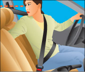
आरेख 2-42
यदि आप बाईं ओर रिवर्स कर रहे हैं, तो अपने शरीर और सिर को बाईं ओर घुमाएँ और अपने बाएँ कंधे के ऊपर देखें (आरेख 2-43)। हमेशा विपरीत कंधे की भी जाँच करें। यदि आप रिवर्स करते समय मुड़ रहे हैं, तो सुनिश्चित करें कि आपके वाहन का अगला भाग किसी चीज़ से न टकराए।
गाड़ी बैक करते समय सीट बेल्ट पहनना अनिवार्य नहीं है। यदि आपको रिवर्स करते समय ठीक से देखने के लिए सीट बेल्ट हटानी पड़े, तो ऐसा करें। लेकिन आगे बढ़ने से पहले सीट बेल्ट दोबारा लगाना न भूलें।
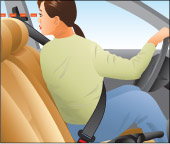
आरेख 2-43
80 किमी/घंटे से अधिक की गति सीमा वाली विभाजित सड़क पर रिवर्स में गाड़ी चलाना गैरकानूनी है। यह नियम सड़क के चलने वाले हिस्से और किनारे दोनों पर लागू होता है। इस नियम का एकमात्र अपवाद तब है जब आप किसी मुसीबत में फंसे व्यक्ति की मदद करने की कोशिश कर रहे हों।
चारों ओर मोड़
गाड़ी चलाते समय अगर आप कोई मोड़ चूक जाते हैं या सड़क पर बहुत आगे निकल जाते हैं, तो आपको वापस मुड़ने की आवश्यकता पड़ सकती है। ऐसा सुरक्षित रूप से करने के कई तरीके हैं।
सबसे सरल और सुरक्षित तरीका है ब्लॉक के चारों ओर चक्कर लगाना, लेकिन कई बार यह संभव नहीं होता। ऐसे मामलों में, यू-टर्न या थ्री-पॉइंट टर्न लेना आवश्यक हो सकता है।
यू टर्न
यू-टर्न लेने से पहले, यह सुनिश्चित कर लें कि वहां कोई ऐसा संकेत तो नहीं है जो यू-टर्न लेने से मना करता हो।
सुरक्षित रूप से यू-टर्न लेने के लिए, आपको दोनों दिशाओं में स्पष्ट रूप से दिखाई देना आवश्यक है। सड़क के मोड़ पर, रेलवे क्रॉसिंग या पहाड़ी की चोटी पर, या किसी ऐसे पुल या सुरंग के पास यू-टर्न लेना गैरकानूनी है जो आपकी दृष्टि को बाधित करता हो। जब तक आप दोनों दिशाओं में कम से कम 150 मीटर तक स्पष्ट रूप से न देख सकें, तब तक यू-टर्न न लें।
यू-टर्न लेने के लिए, पहले दाएं मुड़ने का सिग्नल दें, अपने मिरर और कंधे के ऊपर देखें और सड़क के दाहिनी ओर गाड़ी रोकें। बाएं मुड़ने का सिग्नल दें और जब दोनों दिशाओं में ट्रैफिक साफ हो जाए, तो आगे बढ़ें और तेजी से विपरीत लेन में मुड़ें। मुड़ते समय ट्रैफिक पर नज़र रखें।
तीन-बिंदु मोड़
संकरी सड़कों पर दिशा बदलने के लिए आपको थ्री-पॉइंट टर्न लेना होगा। जैसा कि चित्र 2-44 में दिखाया गया है, थ्री-पॉइंट टर्न सड़क के बिल्कुल दाहिनी ओर से शुरू होता है। ध्यान रखें कि आप सड़क के मोड़ पर, रेलवे क्रॉसिंग या पहाड़ी की चोटी पर या उसके पास, या किसी ऐसे पुल या सुरंग के पास थ्री-पॉइंट टर्न न लें जो आपका दृश्य बाधित करता हो।
बाएं मुड़ने का संकेत दें। जब दोनों दिशाओं में रास्ता साफ हो, तो आगे बढ़ें और स्टीयरिंग व्हील को तेज़ी से बाईं ओर मोड़कर सड़क के दूसरी ओर बने फुटपाथ की तरफ ले जाएं। जब आप सड़क के बाईं ओर पहुंच जाएं, तो रुक जाएं। गाड़ी को रिवर्स गियर में डालें। दाएं मुड़ने का संकेत दें। यह सुनिश्चित करने के बाद कि रास्ता अभी भी साफ है, स्टीयरिंग व्हील को तेज़ी से दाईं ओर मोड़ें और धीरे-धीरे पीछे की ओर सड़क के दूसरी तरफ जाएं। रुक जाएं। आगे के गियर में डालें और ट्रैफिक देखें। जब रास्ता साफ हो, तो आगे बढ़ें।
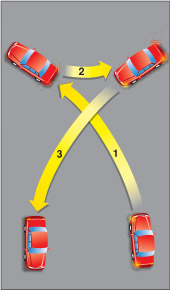
आरेख 2-44
सारांश
इस खंड के अंत तक, आपको निम्नलिखित बातें पता होनी चाहिए:
- चौराहों पर बाएं या दाएं मुड़ने का सही तरीका
- एकतरफा सड़कों पर मुड़ने और उनसे बाहर निकलने से संबंधित नियम
- गोलचक्कर से कैसे गुजरें
- गाड़ी को पीछे करते समय कहां देखना है और उसे कैसे चलाना है
- वाहन को विपरीत दिशा में वापस मोड़ने के तरीके (यू-टर्न, थ्री-पॉइंट टर्न)